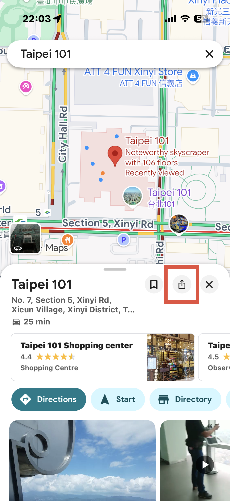
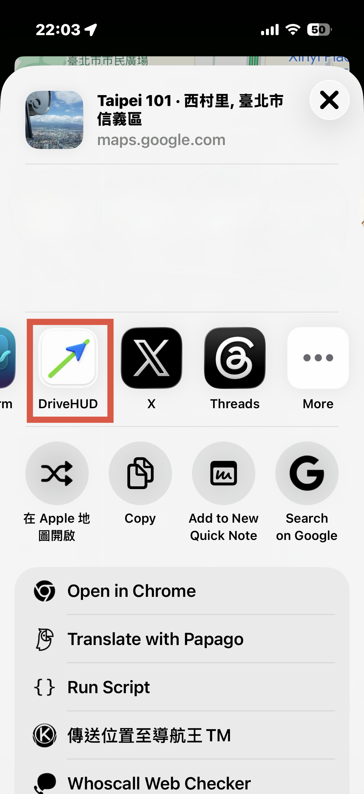
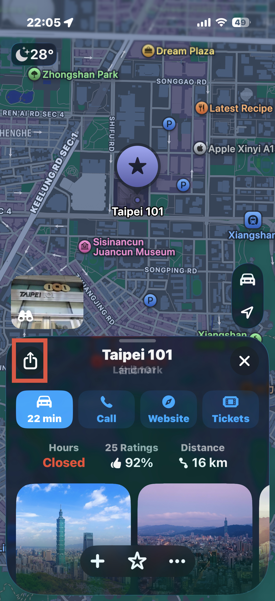
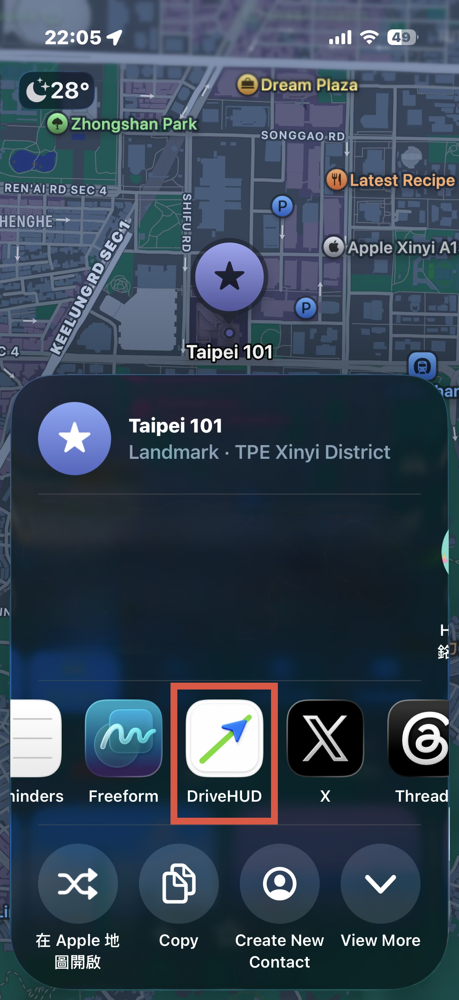

DriveHUD 操作說明
DriveHUD 完整操作說明
首次開啟 App 後，會顯示登入畫面。
點擊「Sign in with Apple」或「Sign in with Google」，依照系統提示完成驗證。
登入成功後，App 會自動讀取您的帳號資料並進入主畫面。
在主畫面或導航畫面的右上角，點擊「⚙️」開啟設定頁面。
往下捲動找到「帳號」區塊，點擊「登出」。
確認後即完成登出，回到登入畫面。
點擊右上角齒輪圖示「⚙️」開啟設定。
在帳號區塊下方找到「刪除帳號」，點擊後確認。
刪除後，您的帳號、點數紀錄及所有個人資料將從伺服器永久移除，此操作無法復原。
首次登入時自動發放，讓你立即開始使用 Google 導航。
每天可點擊一次「每日簽到」按鈕，每日只能簽到一次。
簽到後可額外觀看一次廣告將當日獎勵加倍，另外也可在設定頁面觀看廣告，每小時最多 4 次。
點擊「目的地」搜尋框，輸入地址或地點名稱（例如：台北 101）。
搜尋結果會顯示在下方，列出符合的地點及距離。
從列表中點擊你要前往的地點，搜尋框會填入該地點名稱，並出現勾選標記。
在主畫面選擇「Google Maps」或「Apple Maps」作為導航來源。
依照上一步驟搜尋並選取目的地。
點擊藍色的「開始導航」按鈕，系統會計算路線並進入導航畫面。
進入導航後，可從設定切換成「HUD 模式」，將手機放置於儀表板，對準擋風玻璃即可反射顯示。
在 Google Maps 搜尋或點選目的地，點擊地點資訊卡右上角的分享按鈕（↑）。

iOS 分享清單中找到 DriveHUD（綠色箭頭圖示），點擊後會自動跳回 DriveHUD 並填入目的地。

目的地已自動填入，直接點擊「開始導航」即可出發。分享匯入的目的地只需 -1 點。
在 Apple Maps 搜尋或點選目的地，點擊地點資訊卡左側的分享按鈕（↑）。

iOS 分享清單中找到 DriveHUD（綠色箭頭圖示），點擊後自動跳回 DriveHUD 並填入目的地。

目的地已自動填入，點擊「開始導航」出發。Apple Maps 來源導航完全免費。
DriveHUD Complete Tutorial
The sign-in screen appears the first time you open the app.
Tap Sign in with Apple or Sign in with Google and follow the system prompts.
After signing in, the app loads your account data and takes you to the home screen.
Find the gear icon in the top-right corner of the home or navigation screen.
Scroll to the Account section and tap Sign Out.
Confirm to complete sign-out and return to the login screen.
Tap the gear icon in the top-right corner.
Find Delete Account in the Account section and confirm.
Your account, points, and all personal data are permanently removed from the server. This cannot be undone.
Awarded automatically on first sign-in so you can start using Google navigation right away.
Tap the "Daily Check-in" button once per day.
After checking in you can watch an ad to double the day's reward. You can also watch voluntary ads in Settings (max 4/hour).
Tap the Destination field and type an address or place name (e.g. Taipei 101).
Results appear below, sorted by distance.
Tap the place from the list. The search box fills in and a checkmark appears.
Select Google Maps or Apple Maps using the segmented picker.
Follow the steps above to search and pick a place.
The route is calculated and navigation begins.
During navigation, switch to HUD mode in Settings, then place your phone on the dashboard facing the windshield.
Search or tap a place, then tap the Share button (↑) in the top-right of the place card.
Find DriveHUD (green arrow icon) in the iOS share sheet. Tapping it automatically returns you to DriveHUD with the destination filled in.
The destination is already filled in. Tap Start. Shared destinations cost only -1 point.
Search or tap a place, then tap the Share button (↑) on the left side of the place card.
Find DriveHUD in the iOS share sheet and tap it. DriveHUD opens automatically with the destination set.
Apple Maps navigation is completely free — no points required.
DriveHUD 操作説明
初回起動時にサインイン画面が表示されます。
Apple でサインインまたはGoogle でサインインをタップし、指示に従って認証を完了します。
サインイン成功後、アカウントデータが読み込まれ、ホーム画面に移動します。
ホーム画面またはナビ画面の右上にある歯車アイコンをタップします。
「アカウント」セクションでサインアウトをタップします。
確認後、サインアウトが完了しログイン画面に戻ります。
右上の歯車アイコンをタップします。
アカウントセクションのアカウントを削除をタップして確認します。
アカウント・ポイント・すべての個人データがサーバーから完全に削除されます。この操作は元に戻せません。
初回サインイン時に自動付与されます。
毎日1回「デイリーチェックイン」ボタンをタップできます。
チェックイン後に広告を視聴してその日の報酬を2倍にできます。設定画面でも広告を視聴可能（1時間最大4回）。
「目的地」フィールドをタップして住所や場所名を入力します（例：東京タワー）。
距離順で検索結果が表示されます。
リストから目的地をタップすると検索ボックスに名前が入力されチェックマークが表示されます。
セグメントピッカーでGoogle マップまたはApple マップを選択します。
上記の手順に従って目的地を検索・選択します。
ルートが計算されナビ画面に移行します。
ナビ中に設定からHUDモードに切り替え、スマホをダッシュボードに設置してフロントガラスに反射表示。
場所情報カード右上のシェアボタン（↑）をタップします。
DriveHUD（緑の矢印アイコン）をタップすると自動で DriveHUD に戻り目的地がセットされます。
目的地は自動入力済み。シェア目的地のナビは -1pt のみ。
場所情報カード左側のシェアボタン（↑）をタップします。
シェアシートの DriveHUD をタップすると自動で DriveHUD に戻り目的地がセットされます。
Apple マップナビはポイント不要で完全無料。
DriveHUD 완전 사용 설명서
앱을 처음 실행하면 로그인 화면이 나타납니다.
Apple로 로그인 또는 Google로 로그인을 탭하고 안내에 따라 인증을 완료합니다.
로그인 성공 후 계정 데이터가 로드되고 홈 화면으로 이동합니다.
홈 또는 내비게이션 화면 우측 상단의 톱니바퀴 아이콘을 탭합니다.
계정 섹션에서 로그아웃을 탭합니다.
확인하면 로그아웃이 완료되고 로그인 화면으로 돌아갑니다.
우측 상단의 톱니바퀴 아이콘을 탭합니다.
계정 섹션에서 계정 삭제를 탭하고 확인합니다.
계정, 포인트, 모든 개인 데이터가 서버에서 영구적으로 삭제됩니다. 되돌릴 수 없습니다.
첫 로그인 시 자동으로 지급됩니다.
매일 「일일 체크인」 버튼을 한 번 탭할 수 있습니다.
체크인 후 광고를 시청해 당일 보상을 2배로 만들 수 있습니다. 설정에서도 광고 시청 가능 (시간당 최대 4회).
목적지 필드를 탭하고 주소나 장소명을 입력합니다 (예: 롯데월드타워).
거리순으로 검색 결과가 표시됩니다.
목록에서 목적지를 탭하면 검색창에 이름이 채워지고 체크 표시가 나타납니다.
세그먼트 피커에서 Google 지도 또는 Apple 지도를 선택합니다.
위 단계에 따라 목적지를 검색하고 선택합니다.
경로가 계산되고 내비게이션 화면으로 전환됩니다.
장소 정보 카드 우측 상단의 공유 버튼(↑)을 탭합니다.
공유 시트에서 DriveHUD(초록 화살표 아이콘)를 탭하면 자동으로 DriveHUD로 돌아가 목적지가 설정됩니다.
목적지가 자동 입력되어 있습니다. 공유 목적지 내비는 -1pt만 소비.
장소 정보 카드 좌측의 공유 버튼(↑)을 탭합니다.
공유 시트에서 DriveHUD를 탭하면 자동으로 DriveHUD가 실행되고 목적지가 설정됩니다.
Apple 지도 내비게이션은 포인트 없이 완전 무료.
คำแนะนำการใช้ DriveHUD
ครั้งแรกที่เปิดแอป หน้าจอเข้าสู่ระบบจะปรากฏขึ้น
แตะ Sign in with Apple หรือ Sign in with Google แล้วทำตามคำแนะนำ
หลังจากเข้าสู่ระบบ แอปจะโหลดข้อมูลบัญชีและไปยังหน้าหลัก
แตะไอคอนเฟืองที่มุมขวาบนของหน้าหลักหรือหน้าจอนำทาง
เลื่อนหาส่วนบัญชีและแตะ ออกจากระบบ
ยืนยันเพื่อออกจากระบบและกลับไปยังหน้าเข้าสู่ระบบ
แตะไอคอนเฟืองที่มุมขวาบน
หา ลบบัญชี ในส่วนบัญชีและยืนยัน
บัญชี คะแนน และข้อมูลส่วนบุคคลทั้งหมดจะถูกลบออกจากเซิร์ฟเวอร์อย่างถาวร ไม่สามารถกู้คืนได้
มอบให้อัตโนมัติเมื่อเข้าสู่ระบบครั้งแรก
แตะปุ่ม「เช็กอินรายวัน」ได้วันละ 1 ครั้ง
หลังเช็กอินสามารถดูโฆษณาเพื่อรับรางวัลสองเท่า ดูเพิ่มในหน้าการตั้งค่าได้ (สูงสุด 4 ครั้ง/ชั่วโมง)
แตะช่อง「ปลายทาง」แล้วพิมพ์ที่อยู่หรือชื่อสถานที่ (เช่น เซ็นทรัลเวิลด์)
ผลลัพธ์จะแสดงตามระยะทาง
แตะสถานที่จากรายการ ช่องค้นหาจะถูกกรอกและมีเครื่องหมายถูก
เลือก Google Maps หรือ Apple Maps จาก segmented picker
ทำตามขั้นตอนด้านบนเพื่อค้นหาและเลือกสถานที่
ระบบจะคำนวณเส้นทางและเข้าสู่หน้าจอนำทาง
แตะปุ่มแชร์ (↑)ที่มุมขวาบนของการ์ดข้อมูลสถานที่
แตะ DriveHUD (ไอคอนลูกศรสีเขียว) ในชีตแชร์ของ iOS จะกลับไปยัง DriveHUD อัตโนมัติพร้อมปลายทาง
ปลายทางถูกกรอกอัตโนมัติ การนำทางจากปลายทางที่แชร์ใช้เพียง -1pt
แตะปุ่มแชร์ (↑)ทางด้านซ้ายของการ์ดข้อมูลสถานที่
แตะ DriveHUD ในชีตแชร์ DriveHUD จะเปิดอัตโนมัติพร้อมปลายทาง
Apple Maps นำทางฟรีทั้งหมด ไม่ต้องใช้คะแนน